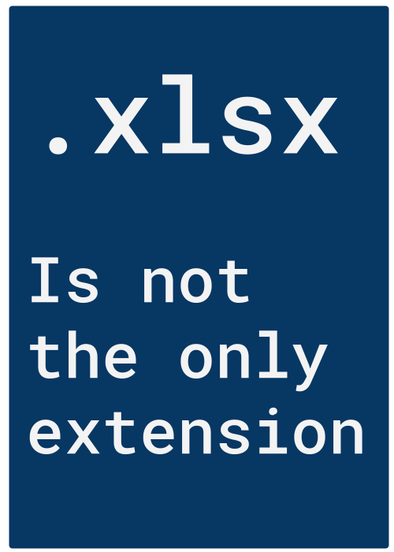

random_df <- read.csv(file = 'random-data.csv')
print(random_df)
#> id gaussian gamma uniform
#> 1 a -1.20706575 0.98899970 0.22484576
#> 2 b 0.27742924 0.03813386 0.08498474
#> 3 c 1.08444118 1.09462335 0.63729826
#> 4 d -2.34569770 1.49301101 0.43101637
#> 5 e 0.42912469 5.40361248 0.07271609
#> 6 f 0.50605589 1.72386539 0.80240202
#> 7 g -0.57473996 1.95357133 0.32527830
#> 8 h -0.54663186 0.07807803 0.75728904
#> 9 i -0.56445200 0.21198194 0.58427152
#> 10 j -0.89003783 0.20803673 0.70883941
#> 11 k -0.47719270 2.08607862 0.42697577
#> 12 l -0.99838644 0.49463708 0.34357270
#> 13 m -0.77625389 0.77171305 0.75911999
#> 14 n 0.06445882 0.37216648 0.42403021
#> 15 o 0.95949406 1.88207991 0.56088725
#> 16 p -0.11028549 0.76622568 0.11613577
#> 17 q -0.51100951 0.50488585 0.30302180
#> 18 r -0.91119542 0.22979791 0.47880269
#> 19 s -0.83717168 0.75637275 0.34483055
#> 20 t 2.41583518 0.62435969 0.60071414
#> 21 u 0.13408822 0.64638373 0.07608332
#> 22 v -0.49068590 0.11247545 0.95599261
#> 23 w -0.44054787 0.11924307 0.02220682
#> 24 x 0.45958944 4.91805535 0.84171063
#> 25 y -0.69372025 0.60282666 0.63244245
#> 26 z -1.44820491 0.64446571 0.310094174 Tabular Data
Important
Effective Data Science is still a work-in-progress. This chapter is undergoing heavy restructuring and may be confusing or incomplete.
If you would like to contribute to the development of EDS, you may do so at https://github.com/zakvarty/data_science_notes.
4.1 Loading Tabular Data

Recall that simpler, open source formats improve accessibility and reproducibility. We will begin by reading in three open data formats for tabular data.
random-data.csvrandom-data.tsvrandom-data.txt
Each of these data sets contains 26 observations of 4 variables:
id, a Roman letter identifier;gaussian, standard normal random variates;gamma, gamma(1,1) random variates;uniform, uniform(0,1) random variates.
4.1.1 Base R
Output is a data.frame object. (List of vectors with some nice methods)
4.1.2 {readr}
random_tbl <- readr::read_csv(file = 'random-data.csv')
#> Rows: 26 Columns: 4
#> ── Column specification ─────────────────────────────────────────────────────
#> Delimiter: ","
#> chr (1): id
#> dbl (3): gaussian, gamma, uniform
#>
#> ℹ Use `spec()` to retrieve the full column specification for this data.
#> ℹ Specify the column types or set `show_col_types = FALSE` to quiet this message.
print(random_tbl)
#> # A tibble: 26 × 4
#> id gaussian gamma uniform
#> <chr> <dbl> <dbl> <dbl>
#> 1 a -1.21 0.989 0.225
#> 2 b 0.277 0.0381 0.0850
#> 3 c 1.08 1.09 0.637
#> 4 d -2.35 1.49 0.431
#> 5 e 0.429 5.40 0.0727
#> 6 f 0.506 1.72 0.802
#> # ℹ 20 more rowsOutput is a tibble object. (List of vectors with some nicer methods)
4.1.2.1 Benefits of readr::read_csv()
Increased speed (approx. 10x) and progress bar.
Strings are not coerced to factors. No more
stringsAsFactors = FALSENo row names and nice column names.
Reproducibility bonus: does not depend on operating system.
4.1.3 WTF: Tibbles
4.1.3.1 Printing
Default to first 10 rows and as many columns as will comfortably fit on your screen.
Can adjust this behaviour in the print call:
# print first three rows and all columns
print(random_tbl, n = 3, width = Inf)
#> # A tibble: 26 × 4
#> id gaussian gamma uniform
#> <chr> <dbl> <dbl> <dbl>
#> 1 a -1.21 0.989 0.225
#> 2 b 0.277 0.0381 0.0850
#> 3 c 1.08 1.09 0.637
#> # ℹ 23 more rowsBonus: Colour formatting in IDE and each column tells you it’s type.
4.1.3.2 Subsetting
Subsetting tibbles will always return another tibble.
# Row Subsetting
random_tbl[1, ] # returns tibble
random_df[1, ] # returns data.frame
# Column Subsetting
random_tbl[ , 1] # returns tibble
random_df[ , 1] # returns vector
# Combined Subsetting
random_tbl[1, 1] # returns 1x1 tibble
random_df[1, 1] # returns single valueThis helps to avoids edge cases associated with working on data frames.
4.1.4 Other {readr} functions
See {readr} documentation, there are lots of useful additional arguments that can help you when reading messy data.
Functions for reading and writing other types of tabular data work analogously.
4.1.4.1 Reading Tabular Data
library(readr)
read_tsv("random-data.tsv")
read_delim("random-data.txt", delim = " ")4.1.4.2 Writing Tabular Data
write_csv(random_tbl, "random-data-2.csv")
write_tsv(random_tbl, "random-data-2.tsv")
write_delim(random_tbl, "random-data-2.tsv", delim = " ")4.1.5 Need for Speed
Some times you have to load lots of large data sets, in which case a 10x speed-up might not be sufficient.
If each data set still fits inside RAM, then check out data.table::fread() which is optimised for speed. (Alternatives exist for optimal memory usage and data too large for working memory, but not covered here.)
Note: While it can be much faster, the resulting data.table object lacks the consistancy properties of a tibble so be sure to check for edge cases, where the returned value is not what you might expect.
4.2 Tidy Data
4.2.1 Wide vs. Tall Data
4.2.1.1 Wide Data
First column has unique entries
Easier for humans to read and compute on
Harder for machines to compute on
4.2.1.2 Tall Data
First column has repeating entries
Harder for humans to read and compute on
Easier for machines to compute on
4.2.1.3 Examples
Example 1 (Wide)
| Person | Age | Weight | Height |
|---|---|---|---|
| Bob | 32 | 168 | 180 |
| Alice | 24 | 150 | 175 |
| Steve | 64 | 144 | 165 |
Example 1 (Tall)
| Person | Variable | Value |
|---|---|---|
| Bob | Age | 32 |
| Bob | Weight | 168 |
| Bob | Height | 180 |
| Alice | Age | 24 |
| Alice | Weight | 150 |
| Alice | Height | 175 |
| Steve | Age | 64 |
| Steve | Weight | 144 |
| Steve | Height | 165 |
[Source: Wikipedia - Wide and narrow data]
Example 2 (Wide)
| Team | Points | Assists | Rebounds |
|---|---|---|---|
| A | 88 | 12 | 22 |
| B | 91 | 17 | 28 |
| C | 99 | 24 | 30 |
| D | 94 | 28 | 31 |
Example 2 (Tall)
| Team | Variable | Value |
|---|---|---|
| A | Points | 88 |
| A | Assists | 12 |
| A | Rebounds | 22 |
| B | Points | 91 |
| B | Assists | 17 |
| B | Rebounds | 28 |
| C | Points | 99 |
| C | Assists | 24 |
| C | Rebounds | 30 |
| D | Points | 94 |
| D | Assists | 28 |
| D | Rebounds | 31 |
[Source: Statology - Long vs wide data]
4.2.1.4 Pivoting Wider and Longer
Error control at input and analysis is format-dependent.
Switching between long and wide formats useful to control errors.
Easy with the
{tidyr}package functions
tidyr::pivot_longer()
tidyr::pivot_wider()4.2.2 Tidy What?

Tidy Data is an opinionated way to store tabular data.
Image Source: Chapter 12 of R for Data Science.
- Each column corresponds to a exactly one measured variable
- Each row corresponds to exactly one observational unit
- Each cell contains exactly one value.
Benefits of tidy data
Consistent data format: Reduces cognitive load and allows specialised tools (functions) to efficiently work with tabular data.
Vectorisation: Keeping variables as columns allows for very efficient data manipulation. (this goes back to data frames and tibbles being lists of vectors)
4.2.3 Example - Tidy Longer
Consider trying to plot these data as time series. The year variable is trapped in the column names!
#> # A tibble: 3 × 3
#> country `1999` `2000`
#> <chr> <dbl> <dbl>
#> 1 Afghanistan 745 2666
#> 2 Brazil 37737 80488
#> 3 China 212258 213766To tidy this data, we need to pivot_longer(). We will turn the column names into a new year variable and retaining cell contents as a new variable called cases.
library(magrittr)
countries %>%
tidyr::pivot_longer(cols = c(`1999`,`2000`), names_to = "year", values_to = "cases")
#> # A tibble: 6 × 3
#> country year cases
#> <chr> <chr> <dbl>
#> 1 Afghanistan 1999 745
#> 2 Afghanistan 2000 2666
#> 3 Brazil 1999 37737
#> 4 Brazil 2000 80488
#> 5 China 1999 212258
#> 6 China 2000 213766Much better!
4.2.4 Example - Tidy Wider
There are other times where we might have to widen our data to tidy it.
This example is not tidy. Why not?
| Team | Variable | Value |
|---|---|---|
| A | Points | 88 |
| A | Assists | 12 |
| A | Rebounds | 22 |
| B | Points | 91 |
| B | Assists | 17 |
| B | Rebounds | 28 |
| C | Points | 99 |
| C | Assists | 24 |
| C | Rebounds | 30 |
| D | Points | 94 |
| D | Assists | 28 |
| D | Rebounds | 31 |
The observational unit here is a team. However, each variable should be a stored in a separate column, with cells containing their values.
To tidy this data we first generate it as a tibble. We use the tribble() function, which allows us to create a tibble row-wise rather than column-wise.
We can then tidy it by creating new columns for each value of the current Variable column and taking the values for these from the current Value column.
tournament %>%
tidyr::pivot_wider(
id_cols = "Team",
names_from = "Variable",
values_from = "Value")
#> # A tibble: 4 × 4
#> Team Points Assists Rebounds
#> <chr> <dbl> <dbl> <dbl>
#> 1 A 88 12 22
#> 2 B 91 17 28
#> 3 C 99 24 30
#> 4 D 94 28 314.2.5 Other helpful functions
The pivot_*() family of functions resolve issues with rows (too many observations per row or rows per observation).
There are similar helper functions to solve column issues:
Multiple variables per column:
tidyr::separate(),Multiple columns per variable:
tidyr::unite().
4.2.6 Missing Data
In tidy data, every cell contains a value. Including cells with missing values.
Missing values are coded as
NA(generic) or a type-specificNA, such asNA_character_.The
{readr}family ofread_*()function have good defaults and helpfulnaargument.Explicitly code
NAvalues when collecting data, avoid ambiguity: ” “, -999 or worst of all 0.More on missing values in EDA videos…
4.3 Wrapping Up
Reading in tabular data by a range of methods
Introduced the
tibbleand tidy data (+ tidy not always best)Tools for tidying messy tabular data
4.4 Session Information
R version 4.2.2 (2022-10-31)
Platform: x86_64-apple-darwin17.0 (64-bit)
locale: en_US.UTF-8||en_US.UTF-8||en_US.UTF-8||C||en_US.UTF-8||en_US.UTF-8
attached base packages: stats, graphics, grDevices, datasets, utils, methods and base
other attached packages: magrittr(v.2.0.3)
loaded via a namespace (and not attached): Rcpp(v.1.0.11), pillar(v.1.9.0), compiler(v.4.2.2), tools(v.4.2.2), digest(v.0.6.33), bit(v.4.0.5), jsonlite(v.1.8.7), evaluate(v.0.21), lifecycle(v.1.0.3), tibble(v.3.2.1), pkgconfig(v.2.0.3), rlang(v.1.1.1), cli(v.3.6.1), rstudioapi(v.0.15.0), yaml(v.2.3.7), parallel(v.4.2.2), xfun(v.0.39), fastmap(v.1.1.1), withr(v.2.5.0), dplyr(v.1.1.2), knitr(v.1.43), generics(v.0.1.3), vctrs(v.0.6.3), htmlwidgets(v.1.6.2), hms(v.1.1.3), bit64(v.4.0.5), tidyselect(v.1.2.0), glue(v.1.6.2), R6(v.2.5.1), fansi(v.1.0.4), vroom(v.1.6.3), rmarkdown(v.2.23), pander(v.0.6.5), readr(v.2.1.4), tzdb(v.0.4.0), tidyr(v.1.3.0), purrr(v.1.0.1), htmltools(v.0.5.5), renv(v.0.16.0), utf8(v.1.2.3) and crayon(v.1.5.2)